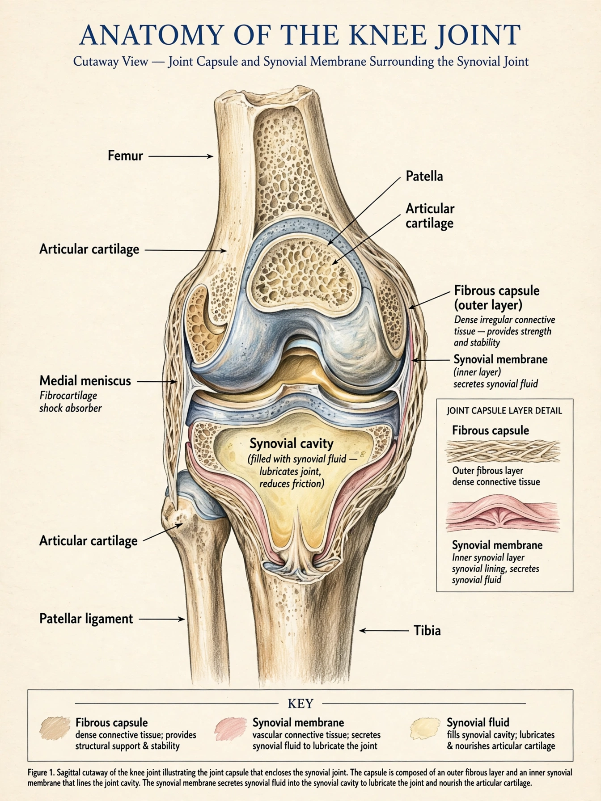

| Joint capsule | |
|---|---|
 | |
| System | Musculoskeletal |
| Part of | Synovial joint |
| Latin | capsula articularis |
The joint capsule or articular capsule is an envelope surrounding a synovial joint. It encloses the synovial cavity and unites the articulating bones, providing passive stability while permitting movement.
The capsule consists of two layers. The outer fibrous layer (fibrous capsule) is dense irregular connective tissue continuous with the periosteum of the articulating bones; in places it thickens to form ligaments. The inner synovial membrane is vascular connective tissue that produces synovial fluid, which lubricates and nourishes articular cartilage.
The capsule seals the joint cavity, distributes synovial fluid, contributes proprioceptive feedback through mechanoreceptors, and resists dislocation. Its laxity varies: the shoulder capsule is loose for mobility, whereas the hip capsule is strong and tight for stability.
Capsular inflammation (capsulitis) underlies adhesive capsulitis (frozen shoulder). Capsular injury, laxity, or contracture can cause instability or restricted range of motion. Joint effusion distends the capsule and causes pain.